Hi, I’m David Gerardo Zuniga — a senior at the University of Southern California studying Computer Science, with a growing passion for UX/UI design. Ever since I was young, I’ve loved finding ways to express my creativity — whether through drawing, layout design, or reimagining the look and feel of everyday things. That creative instinct naturally evolved into a deeper interest in how thoughtful design shapes digital experiences.
After transferring from Los Angeles Pierce College, I discovered the world of user-centered design and became captivated by how interfaces can influence emotion, behavior, and trust. I also developed a strong passion for web development — specifically, crafting responsive, accessible websites that are both visually appealing and intuitive to use. I find joy in designing interfaces that aren’t just functional, but also aesthetically pleasing and emotionally resonant.
What excites me most is the challenge of turning complex ideas into clean, intuitive experiences that make people feel empowered and understood. I care deeply about designing with empathy and purpose. Whether I’m wireframing in Figma, coding interactive features, conducting usability tests, or refining interaction flows, my goal is always to create work that’s not only functional — but human-centered, accessible, and intentional.
I love watching and analyzing sports in my free time — it’s how I relax and stay sharp. The Dodgers have always been a special part of my life, and I also follow the Cavaliers. It’s an unusual combo, but both teams mean a lot to me.
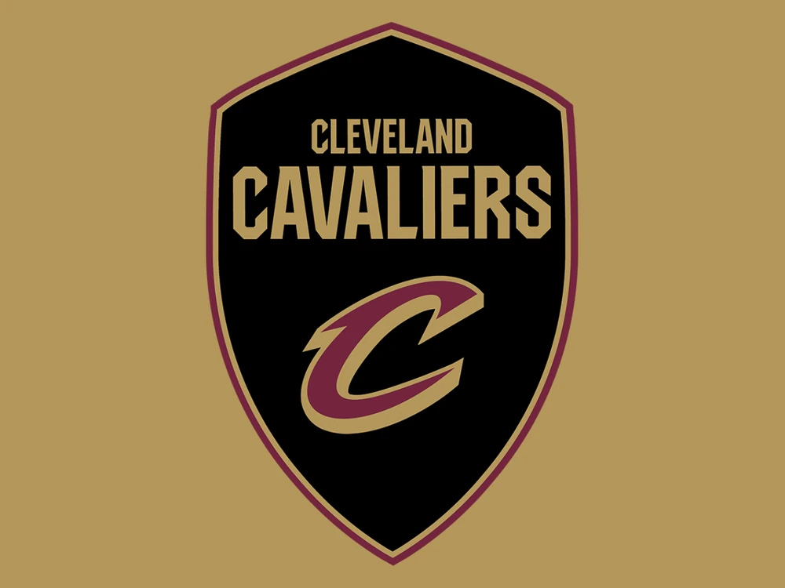
I’m drawn to TV shows that blend sci-fi with emotional storytelling — dark, thought-provoking worlds with strong characters and high stakes.
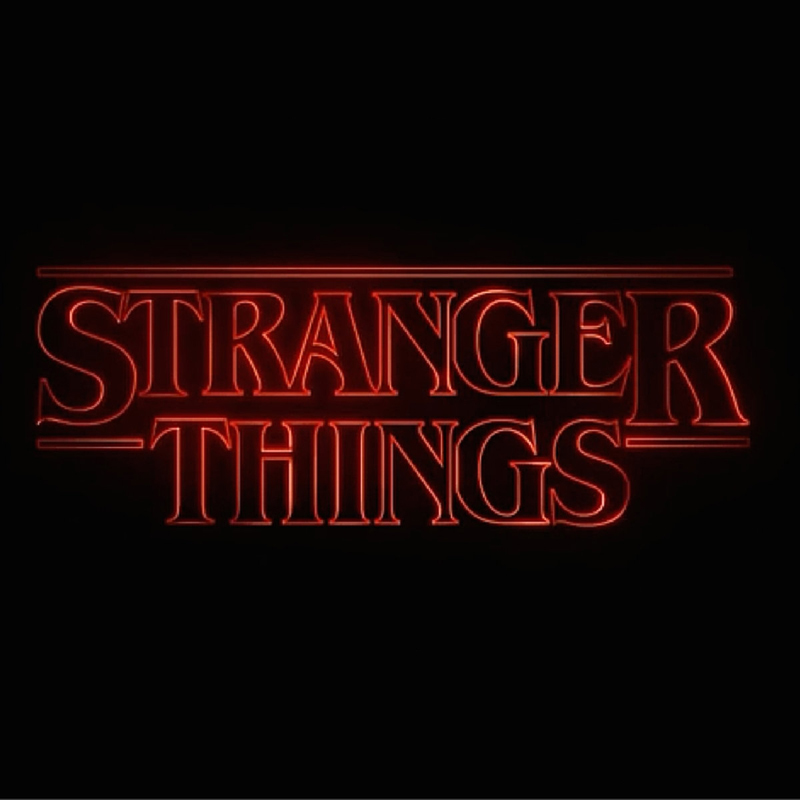
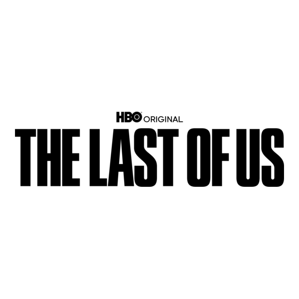
I’ve been running a social media page for about 8 years, using it as a creative outlet to design posts that highlight my favorite team. It’s where I combine my love for sports, storytelling, and visual design.
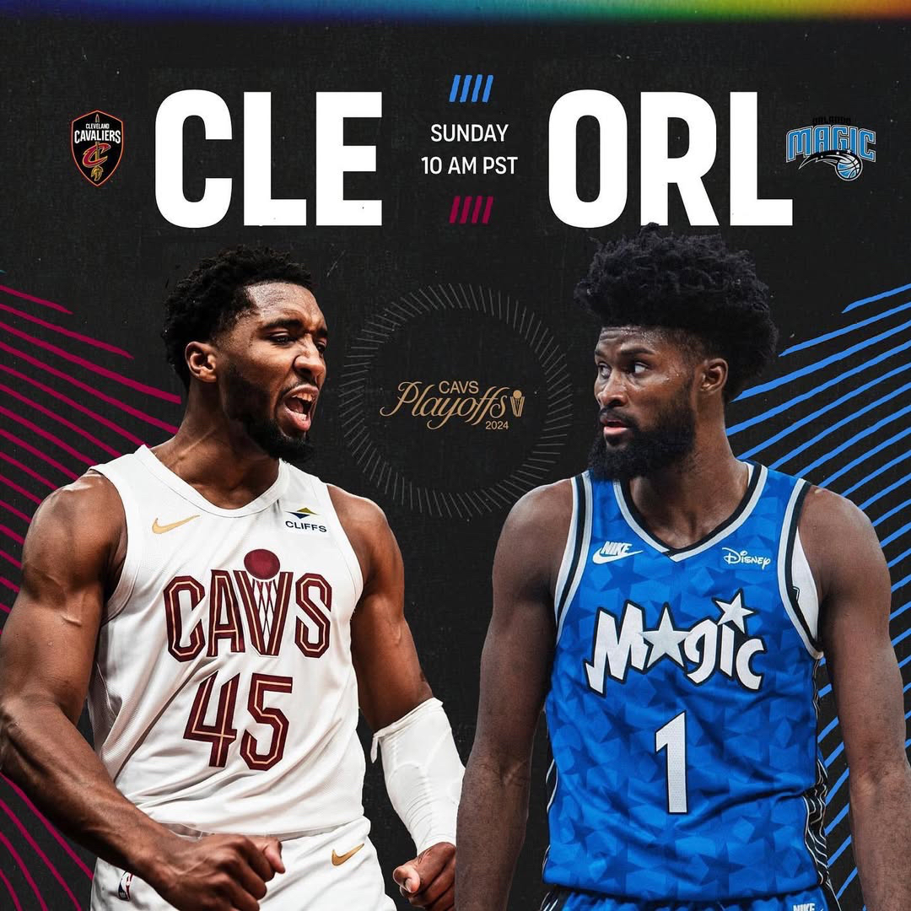
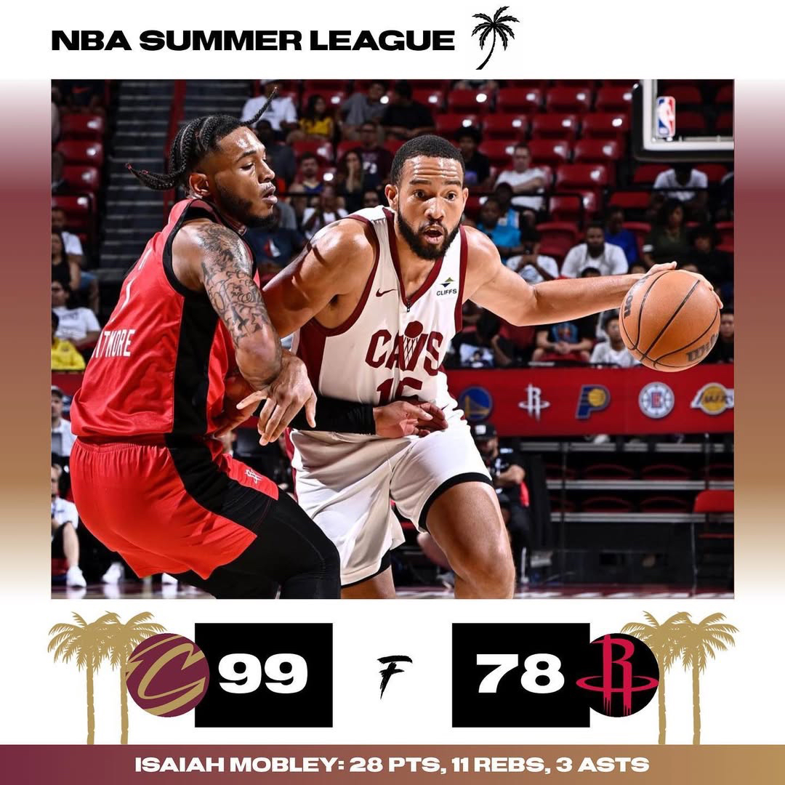
I’m a member of the USC Marching Band, where I play trombone and support USC's teams at games. It’s given me the chance to perform in incredible stadiums and travel to different states, all while being part of something bigger than myself.
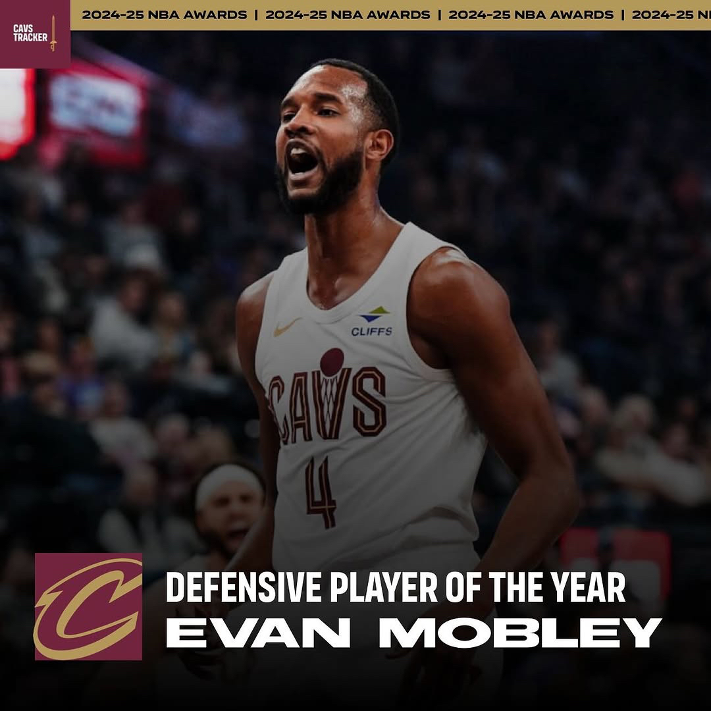
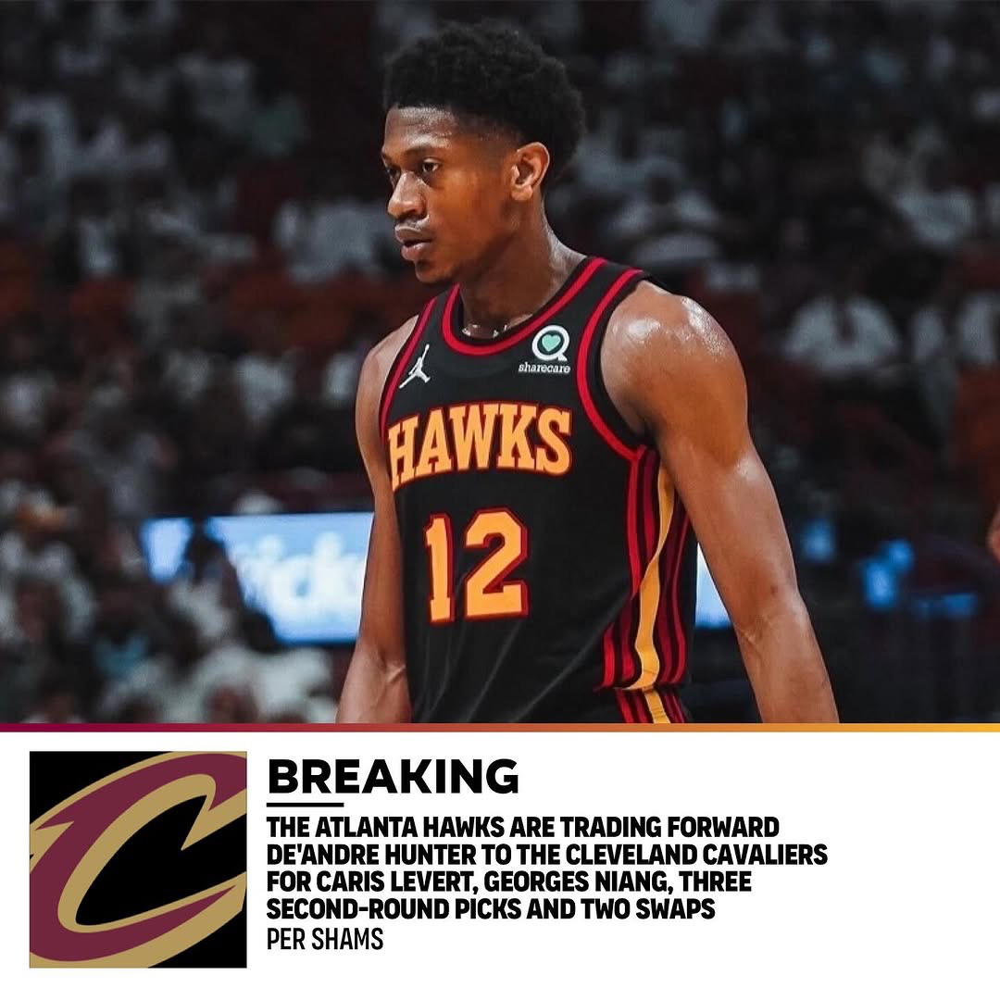
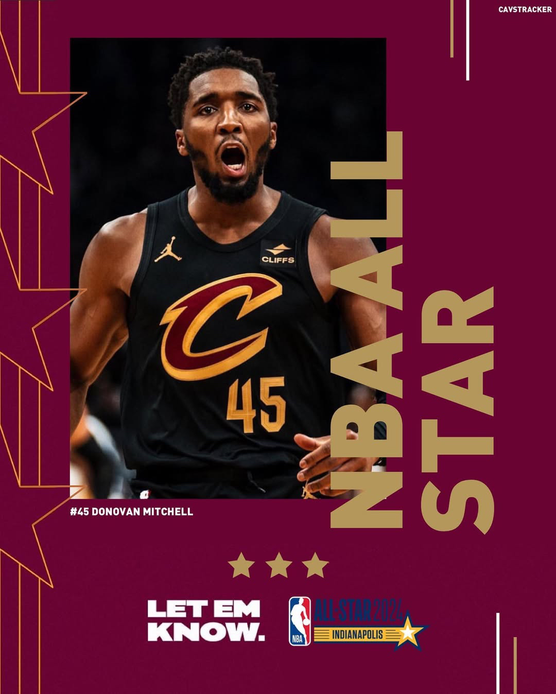
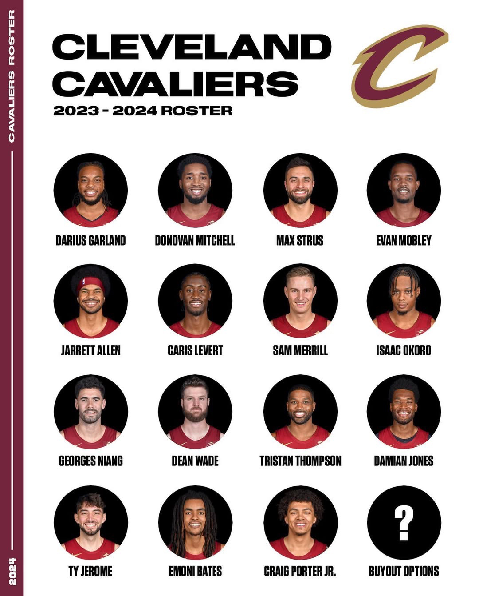
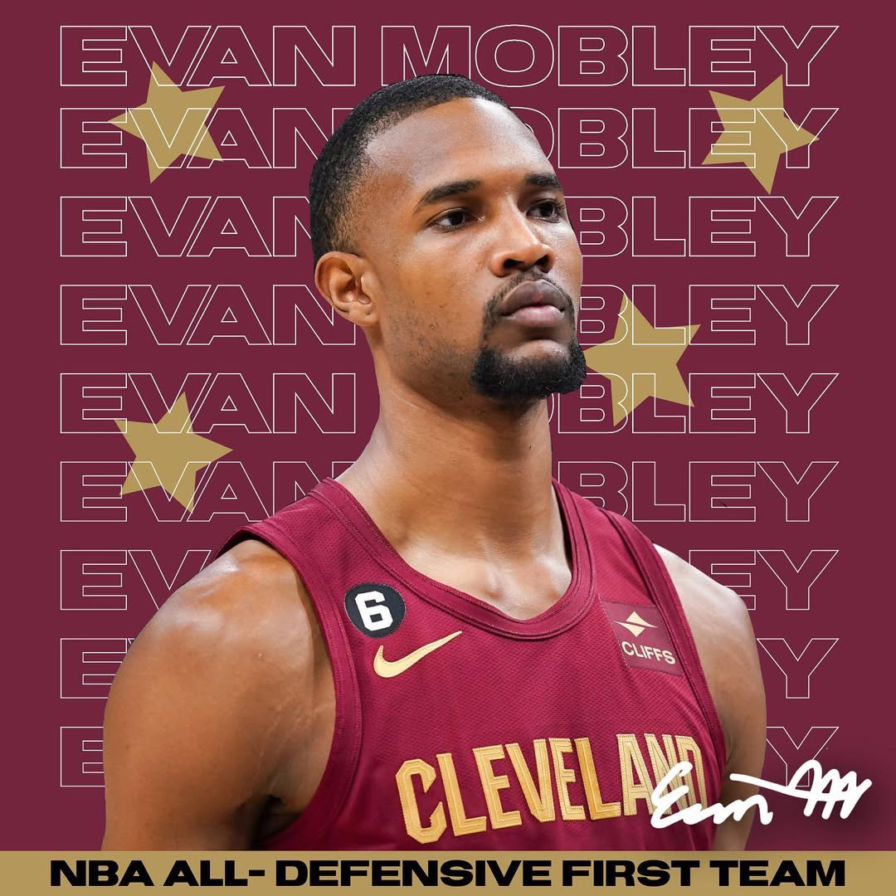
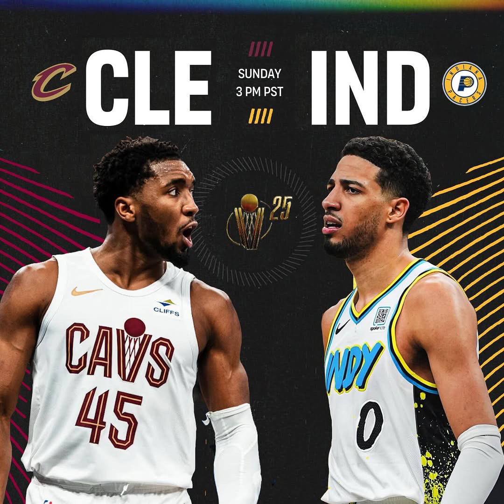
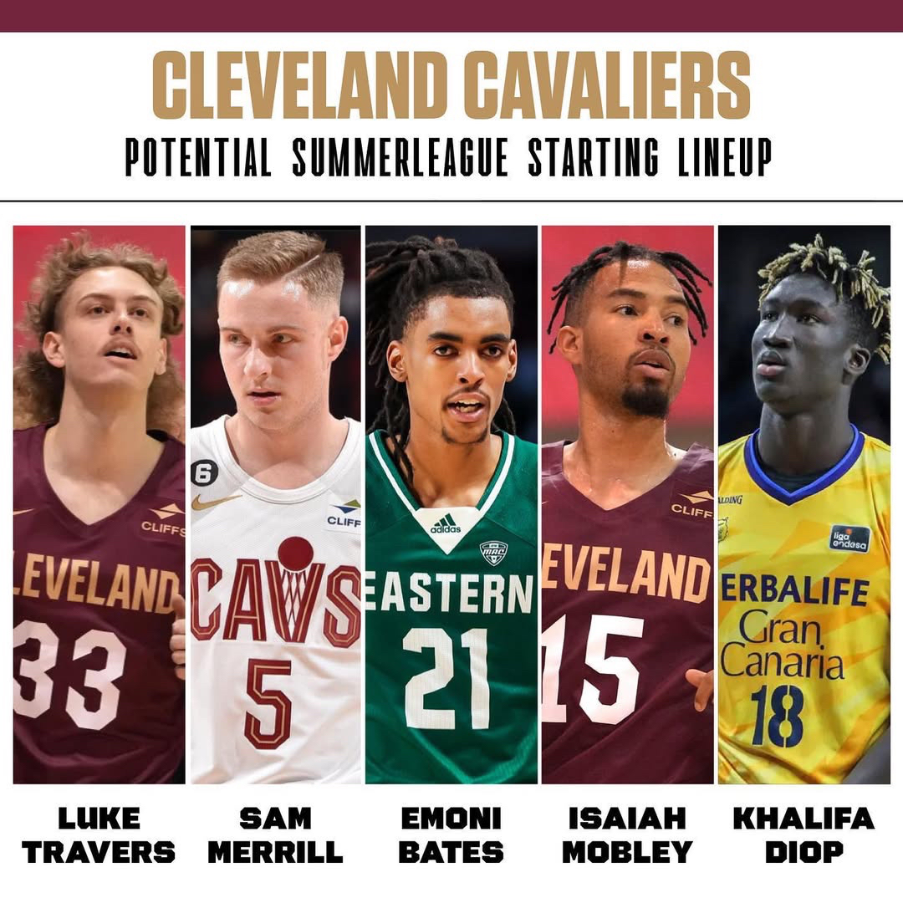